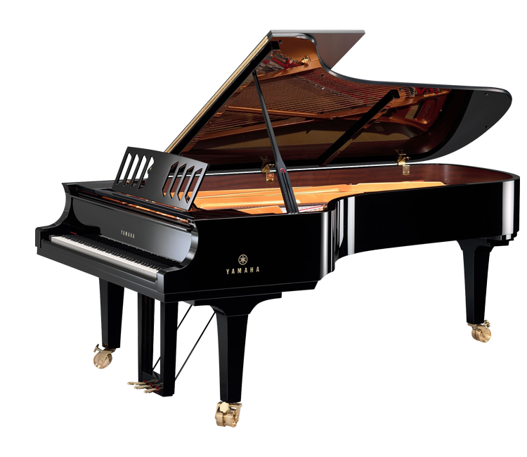
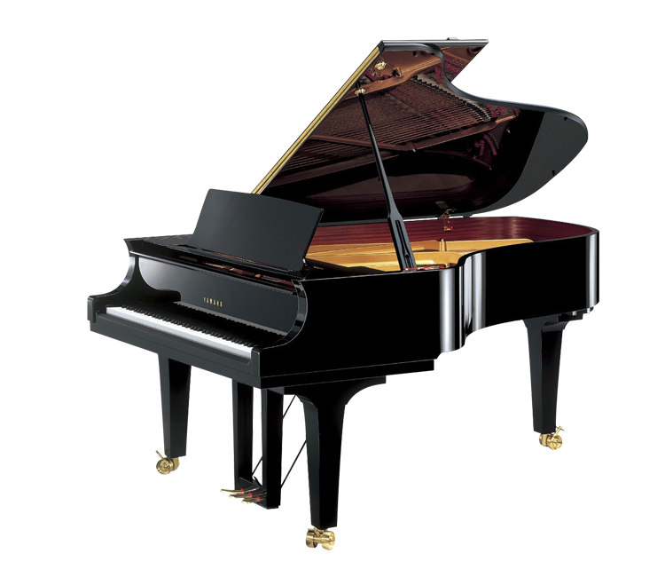
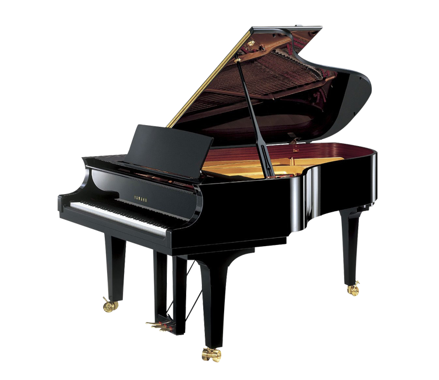

GRAND PIANOS
CONCERT MODEL LINE-UP
- CFX
- CF6
- CF4
-

세상에서 가장 큰 무대를 고려해 제작되었습니다.
순수한 사운드는 아티스트에서 피아노, 청중으로 자연스럽게 흐르며
세계에서 가장 권위 있는 콘서트 홀을 채웁니다. -

중형 규모의 콘서트 홀에 어울리는 피아노.
어떤 공연이든 무대 규모를 뚫고 더 큰 감동을 주는
콘서트 사운드, 그리고 피아노의 울림을 경험하세요. -

모임 장소를 고려한 웅장한 음색.
소규모 무대에서 볼 수 없는 멋진 공연을 경험하십시오
크기를 초월한 사운드의 콘서트 그랜드 피아노를 만나보세요.
아름다움과 강렬한 힘
이 시리즈에 숨겨진 컨셉은 "아름다움과 힘"입니다.
광범위한 음색과 가장 미묘한 음악적 보이싱을 만들어내는 능력으로 인한 아름다움.
훌륭한 피아니스트의 손에 의해 CF 시리즈 피아노는 거의 들어보지 못한 표현력으로
"노래"를 연주할 수 있습니다.
힘은 놀라운 음색의 존재감을 나타냅니다.
포르티시모를 연주할 때뿐만 아니라 부드럽고 섬세한 악절도 홀 전체에 전달됩니다.
베이스는 놀랍고 모든 음역대는 공연장의 규모에 관계없이
전체 심포니 오케스트라에 투영될 수 있습니다.
YAMAHA GRAND PIANO
YAMAHA GRAND PIANO
모던한 백금 스프링
흰색 건반은 새로 개발된 "Ivorite" 소재로
모양과 느낌이 모두 자연스러운 상아처럼 편안한 터치를 가능하게 해줍니다.
검은색 건반은 엄선된 고급 흑단으로 만들어졌습니다.

숙련된 장인이 만드는
베이스 현
다양한 고주파의 파형에서 해머로 두드렸을 때 반응하는 방식에 이르기까지
피아노 와이어에 대한 연구를 하나도 빠짐 없이 거듭했습니다.
재료와 제조 방법 모두 매우 중요하기 때문에
Yamaha의 베이스 현은 숙련된 장인이 손으로 직접 감습니다.
우아한 곡선의 외관
CF 시리즈의 피아노는 사운드의 우아함과
순수함을 반영하는 아름다운 실루엣을 공유합니다.
불필요한 장식을 없애고 전체적으로 날렵하고 모던한 디자인을 구현했습니다.
당신의 순간을 위해 제작하였습니다
피아니스트 주희성의 New CFX 연주
‘유니바디 컨셉’의 새로운 설계 사상을 채택한 New CFX는
마치 연주자의 뜻을 느끼는 것처럼 반응하여
피아노와 하나가 되는 경험을 선사합니다.
- 문의하기
- 다른 제품 보러가기